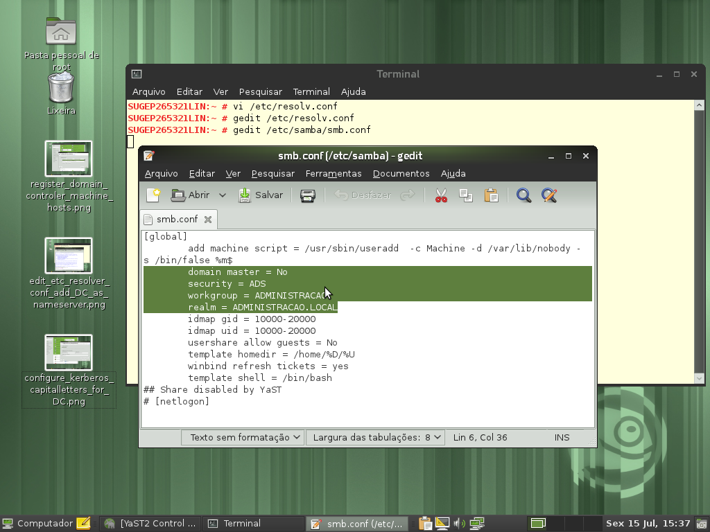

Linux - Participação no domínio do Windows
by Gilberto C. Andrade on 15 Julho 2011
Tagged as: Active-Directory, kerberos, Linux, openSUSE, Sistema-Operacional, Windows,
Eu não quero compartilhar aquivo nenhum, apenas quero me logar no dominio MS, para assim usar internet, e-mail, enfim tudo que uma estação de trabalho com XP faria quando ingressa no dominio! Eu não quero criar um server com samba sem ser PDC E deixar na rede, quero apenas ao inves de usar o XP como estação de trabalho usar o openSUSE!
Este pedido de ajuda está registrado aqui na comunidade vivaolinux.
Apesar de ser uma discussão antiga, ainda assim é bom fazer um passo a passo deste procedimento. Antes devo relatar que aqui na secretaria usamos Active Directory para autenticação, então foi esse ambiente que usei para testar a inclusão de uma estação Linux openSUSE em um Domínio Windows:
- Registrar seu controlador de domínio(DC) na lista de nomes de máquinas. Adicione todo o nome qualificado primeiro e o apelido como alias: 192.168.1.2 = server.domain.com server

- Editar o arquivo /etc/resolv.conf e adicionar seu DC como nameserver: nameserver = server.domain.com

- Configure o kerberos através do yast: o realm deverá ser escrito em letra maiúscula: DOMAIN.COM

- Configura o samba
SUGEP265338:~ # more /etc/samba/smb.conf # smb.conf is the main Samba configuration file. You find a full commented # version at /usr/share/doc/packages/samba/examples/smb.conf.SUSE if the # samba-doc package is installed. # Date: 2011-11-02 [global] add machine script = /usr/sbin/useradd -c Machine -d /var/lib/nobody -s /bin/false %m$ domain master = No security = ADS workgroup = ADMINISTRACAO realm = ADMINISTRACAO.LOCAL idmap gid = 10000-20000 idmap uid = 10000-20000 usershare allow guests = No template homedir = /home/%D/%U winbind refresh tickets = yes template shell = /bin/bash [homes] comment = Home Directories valid users = %S, %D%w%S browseable = No read only = No inherit acls = Yes [profiles]Não esqueça de reiniciar os serviços

Adicionar a máquina ao domínio (neste momento utilizando o kerberos)
net ads join -U Administrador

Adicionar a máquina ao domínio (agora utilizando o samba): no yast use a opção:”Participação no domínio do windows”, marcando a opção “Usar informação SMB para autenticação Linux”
Use com moderação!
{kind=link}
{kind=link}
{kind=link}
{kind=link}